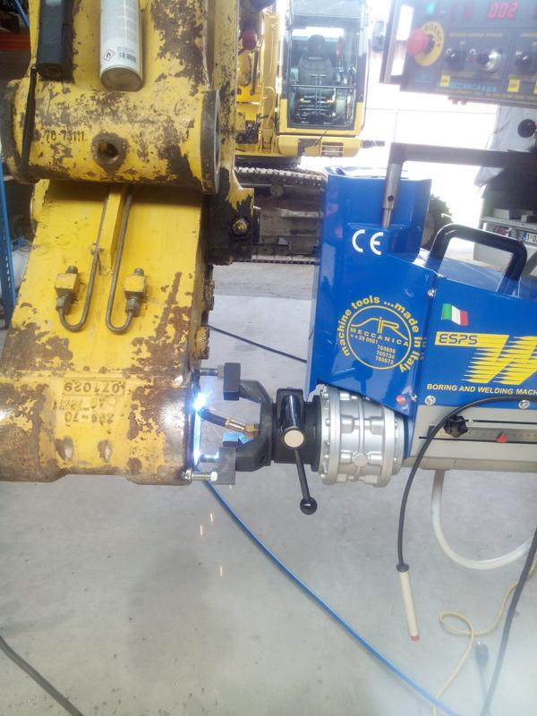
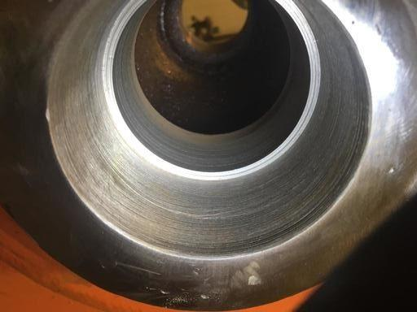

Mobiel kotteren van pen-en-gatverbindingen
Uitgesleten of ovale draaipunten terug op originele maat, rechtstreeks aan uw machine. Van 45 tot 400 mm, tot op 0,01 mm nauwkeurig, in heel België.
Wat is mobiel kotteren?
Kotteren is een nauwkeurige verspaningstechniek waarmee een uitgesleten (te groot of ovaal geworden) gat terug perfect rond en op maat wordt gebracht. Bij mobiel kotteren gebeurt dat niet in een werkplaats, maar met een draagbare kottermachine rechtstreeks aan uw machine.
Het voordeel: de machine hoeft niet vervoerd te worden en blijft grotendeels gemonteerd. Alleen het draaipunt dat we herstellen, wordt vrijgemaakt. Zo bespaart u transport, demontage en vooral dagen stilstand.
Wanneer laat u best kotteren?
- U voelt of ziet speling in een draaipunt van arm, giek, bak of knik.
- De gaten zijn ovaal uitgesleten of de bus draait mee in het gat.
- Nieuwe pennen of bussen passen niet meer strak.
- De machine werkt minder precies of maakt ongewone geluiden in de scharnierpunten.
Wacht niet te lang: speling zorgt voor schokbelasting, waardoor ook pennen, cilinders en de constructie zelf sneller beschadigen.


Hoe gaat mobiel kotteren in zijn werk?
Elke herstelling volgt hetzelfde vakkundige proces, zodat het resultaat even nauwkeurig is als in een werkplaats.
Vrijmaken & meten
De pen wordt verwijderd en we meten hoe ver het gat is uitgesleten.
Uitlijnen op de hartlijn
We monteren de kotterunit en lagerblokken exact op de hartlijn van de gaten, ook bij meerdere gaten in één lijn.
Oplassen
Is het gat te ver uitgesleten, dan lassen we het automatisch op tot onder de originele maat.
Kotteren op maat
De kotterbeitel draait het gat terug perfect rond, tot op 0,01 mm. Daarna monteren we pen of bus.
Mogelijkheden in cijfers
| Diameter | 45 mm tot 400 mm |
|---|---|
| Nauwkeurigheid | tot 0,01 mm |
| Meerdere gaten in één lijn | Ja, in één opstelling |
| Oplassen van gaten | Ja, automatisch inwendig oplassen |
| Montage bussen / originele pen | Ja |
| Waar | Ter plaatse in heel België |
Toepassingen
We kotteren draaipunten van onder andere:
Typische onderdelen: giek- en armdelen, bakogen, snelwissels, knikpunten van wielladers en scharnierpunten van grijpers en bakken.
De voordelen van mobiel kotteren
Minder stilstand
Herstelling op uw locatie. Geen wachttijd voor transport of werkplaatsplanning.
Kostenbesparing
Geen transport en geen nieuwe onderdelen: u herstelt de bestaande arm, bak of constructie.
Originele maatvoering
Het gat komt terug op de originele maat, zodat originele pennen, bussen of lagers weer passen.
Minimale demontage
Alleen het betrokken draaipunt wordt vrijgemaakt, de machine blijft verder intact.

Ook oplassen en bussen
Is een gat te ver uitgesleten, dan lassen we het eerst op. Wilt u een bus plaatsen, dan kotteren we het gat overmaats en monteren we de bus. Zo krijgt elk draaipunt de juiste oplossing.
Oplassen & bussen monterenVeelgestelde vragen over kotteren
Wat is mobiel kotteren?
Kotteren is het herstellen van een uitgesleten (te groot of ovaal geworden) gat van een draaipunt. Bij mobiel kotteren gebeurt dat met een draagbare kottermachine rechtstreeks aan uw machine, op uw werf of in uw werkplaats. Het gat wordt indien nodig eerst opgelast en daarna op exacte maat uitgekotterd.
Moet mijn machine naar een werkplaats?
Nee. Wij komen met onze uitgeruste servicebus naar uw locatie. Uw machine hoeft niet getransporteerd te worden en is meteen na de herstelling weer inzetbaar.
Welke diameters kunnen jullie kotteren?
Van 45 mm tot 400 mm, tot op 0,01 mm nauwkeurig. Meerdere gaten in één lijn kotteren we in dezelfde opstelling, zodat ze perfect uitgelijnd blijven.
Moet de machine volledig gedemonteerd worden?
Nee. De demontage blijft beperkt tot het draaipunt dat we herstellen. De rest van de machine blijft gewoon gemonteerd.
Kunnen jullie ook nieuwe bussen of pennen plaatsen?
Ja. We kunnen gaten vergroten (overmaats kotteren) om bussen te monteren, versleten bussen vervangen en het gat zo afwerken dat een originele pen, bus of lager weer past.
In welke regio werken jullie?
In heel België. Onze uitvalsbasis is Rijkevorsel (provincie Antwerpen), van daaruit rijden we naar uw werf, bedrijf of werkplaats.
Hoe vraag ik een offerte aan?
Bel 0479 73 29 70 of vul het offerteformulier in. Stuur gerust foto's van het versleten draaipunt mee: zo kunnen we sneller een inschatting maken.
Draaipunt versleten?
Stuur een foto via het offerteformulier of bel ons, we denken graag mee.